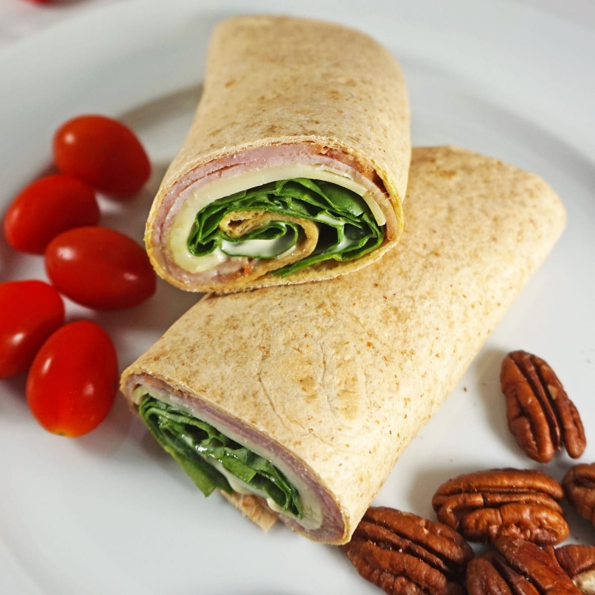

Ham Wrap

Description
A deliciously simple lunch meal full of nutrition.
Ingredients
- Tortilla
- 100g of Ham
- A slice of cheese
- Peri-mayo sauce
- Tomato slices
- Spinach & Rocket
- Pepper Cracker
Steps
- Lay the tortilla down on a cutting board or kitchen bench.
- Place some of the peri-mayo sauce onto the tortilla.
- Place 3 slices of ham on top of the sauce.
-
Cut & place tomato slices on top of the ham with a few cracks of
pepper.
- Place some spinach & rocket on top of the ham & tomato.
-
Break up a slice of cheese and place on top of the other
ingredients.
- Wrap the tortilla up & eat!